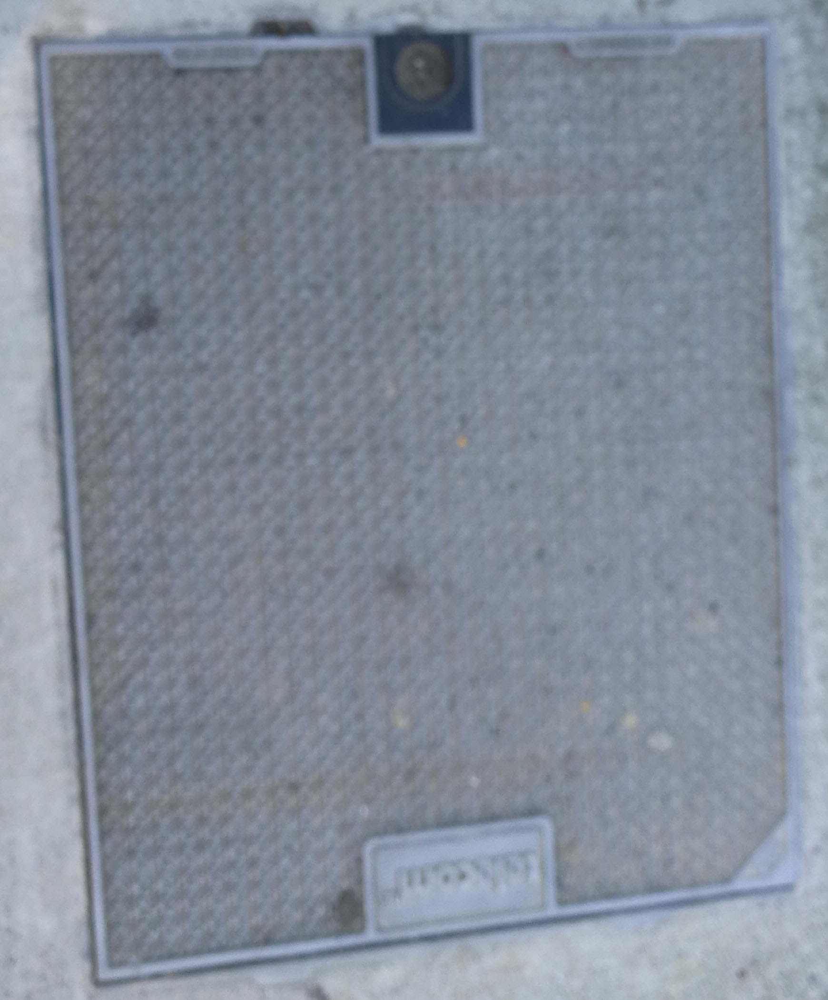
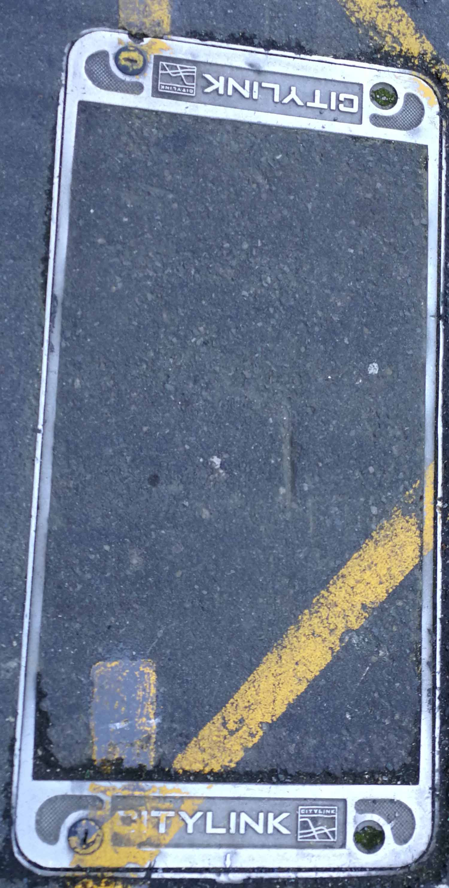

Chorus Comminications
This is one of the main companies in wellington who does networking

Other communication Manholes
Other communication related manholes.

Other communication Manholes
Other communication related manholes..

Another Chorus manhole
This is one of the main companies in wellington who does networking